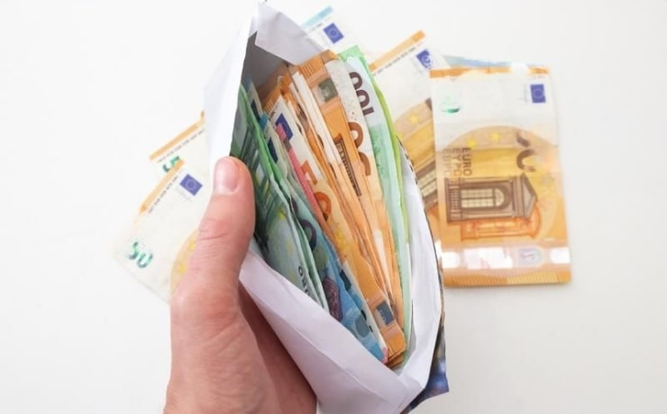
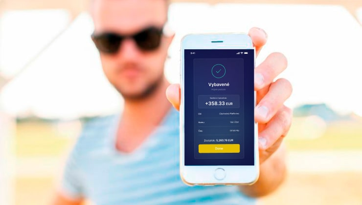

Údržbár urobil správnu vec a užíva si lepší život s pasívnym príjmom 10 000 € mesačne! Táto metóda je jednoduchá a dostupná pre všetkých!
16:25
Neuveriteľné udalosti, ktoré zo dňa na deň zmenia náš život, sa každý deň stávajú rôznym ľuďom. Aj keď máte pocit, že ste už prežili dlhý život a nemáte sa na čo tešiť, predsa len vás raz dobehne chvíľa, keď sa ocitnete na križovatke a ste nútení urobiť správne rozhodnutie.
Tak sa to stalo aj hrdinovi dnešného príbehu, Samuelovi Fabianovi. Skôr než začneme, je vhodné povedať, že náš hrdina je obyčajný muž, vo svojom veku a údržbár, ktorý predstavuje tú kategóriu ľudí, ktorým sa nikdy nič zaujímavé nestane... Aj Samuel si to myslel, ale jedného dňa našiel kufor plný peňazí.
Tento príbeh je príkladom toho, že skutky láskavosti prinášajú nielen osobné uspokojenie, ale predstavujú aj príležitosť na vytvorenie bohatstva prostredníctvom investícií do kryptoaktív.
Vďaka svojmu dobrému skutku žije starý údržbár bezstarostne a nestará sa o peniaze.
Čo ak by ste mali šancu nájsť kufor plný peňazí? Nepremýšľali ste o tom, pretože je to nemožné? Samuel Fabian by sa s vami hádal. Ako obyčajný údržbár obytného domu sa dostal k takému veľkému nálezu.
Pozvali sme ho na rozhovor, aby nám porozprával svoj jedinečný príbeh, a toto nám povedal:
Novinár: Pamätáte si na svoju prvú reakciu?
Samuel: Bol som šokovaný a v očiach sa mi zablesklo, ale trvalo to len chvíľu. Tento kufor stál medzi poschodiami domu, kde som pracoval ako údržbár. Bolo skoro ráno, umýval som schody. Vyčítam si, že som otvoril cudzí kufor a že som chcel tieto peniaze spreneveriť, pretože som bol na dôchodku a pracoval som ako údržbár, nie z dobrého života. Hneď som si predstavil, koľko "finančných dier" by som mohol týmito peniazmi zaplátať. Pôžičky, pomoc deťom, liečbu, možno nové auto alebo cestu okolo sveta s manželkou, o čom sme už dlho snívali... Po chvíli premýšľania som si však uvedomil, že majiteľ kufra sa skôr či neskôr nájde. Rozhodol som sa teda urobiť správnu vec a kontaktoval som ochranku budovy. A s pomocou kamerových záznamov sme majiteľa našli. Neľutujem, čo som urobil, pretože som získal viac, ako som očakával...
Novinár: Kto bol majiteľom všetkých týchto peňazí?
Samuel: Z jej majiteľa sa vykľul ekonóm a úspešný investor. Ponúkol mi odmenu a ja som úctivo odmietol, pretože som neočakával, že dostanem zaplatené za to, že robím správnu vec. On však išiel opačnou cestou a elegantne vyšiel zo situácie: dal mi obálku s 1000 eurami a sľúbil oveľa väčšiu príležitosť zarobiť ...
Novinár: A o čo išlo a aká bola táto veľká príležitosť? Ako táto metóda funguje? funguje?
Samuel: Je to výnimočný okamih, o ktorý sa chcem podeliť so všetkými. Nikdy by som naň nenarazil, nebyť tej udalosti s kufrom. Teraz túžim každému poskytnúť možnosť získať významný príjem. Majiteľ kufríka zanietene rozprával o investičnom pôvabe kryptomien a poskytol podrobný prehľad o špičkovej, automatizovanej BitcoinBanke v reálnom čase s názvom "BitcoinBank", ktorá je určená špeciálne pre investorov.
Jedinečný spôsob, ako zarobiť na investíciách do kryptomien, ktoré sa najväčšie banky na svete snažia utajiť!
BitcoinBank je automatizovaný systém obchodovania s kryptomenami využívajúci umelú inteligenciu. Vďaka svojmu samoučiacemu sa logickému jadru dokáže BitcoinBank presne identifikovať najziskovejšie transakcie na trhu s kryptomenami s úspešnosťou 96,4 %. Okrem toho dokáže predpovedať trendy rastu Bitcoinu.
V posledných rokoch došlo k pozoruhodnému nárastu zavedenia a trhovej kapitalizácie kryptomien. Medzi nimi sa Bitcoin stal jednou z najznámejších a najvyhľadávanejších digitálnych mien. Jeho hodnota zažila pozoruhodný vzostup, keď sa prudko zvýšila o viac ako 300 % a dosiahla bezprecedentný vrchol vyše 64 000$. Okrem toho aj ďalšie kryptomeny, ako napríklad Ethereum, zaznamenali ohromujúci rast, pričom ich hodnota prudko stúpla o viac ako 1000 %.
V súčasnosti nakupujú významné osoby so značným majetkom a vážené podnikateľské subjekty značné množstvo Bitcoinu. Tento výrazný záujem inštitucionálnych investorov naďalej pretrváva. Mnohí skúsení investori a odborníci z odvetvia pevne zastávajú názor, že zaradenie kryptoaktív do investičných portfólií je nevyhnutné.
Samuel Fabian v rozhlasovom vysielaní informoval o výsledkoch práce s BitcoinBank: "Keď som počul o BitcoinBank, myslel som si, že je to nejaký trik. Vzhľadom na svoju finančnú situáciu som sa však rozhodol, že to vyskúšam. Vyplnil som formulár na webovej stránke a potreboval som pomoc pri zisťovaní, ako túto BitcoinBank používať. O niekoľko minút mi zavolal späť môj manažér. Okamžite mi poskytol prístup k BitcoinBank a pomohol mi vykonať môj prvý vklad: 250 €.
Na mojom zostatku som videl 250 € a každú minútu som aktualizoval obrazovku. Nebudete mi veriť, ale za 15 minút bol môj kredit už 500 €! Potom som išiel robiť iné veci a pred spaním som opäť otvoril BitcoinBank a bol som šokovaný: môj zostatok bol 700 €. O týždeň neskôr bol môj zostatok 2400 €, o mesiac neskôr sa zvýšil na 10 000 €. Neveril som vlastným očiam. Stále neverím v takéto šťastie. Ďakujem svojmu manažérovi, že mi pomohol pochopiť program. Po registrácii som nerozumel vôbec ničomu a nebyť jeho, pravdepodobne by som neinvestoval svojich prvých 250 €.
Samuel pokračuje: "Nechcem vzbudzovať rozruch, ale peniaze na mňa momentálne padajú ako z neba. Nič si neodopieram a pomáham svojim deťom a vnúčatám. Napríklad môj vnuk sa chcel oženiť, ale nemohol svojej priateľke kúpiť zásnubný prsteň. Podporil som ho a dal som peniaze na zásnubný prsteň pre jeho milovanú. Čoskoro sa budeme na svadbe zabávať s celou rodinou. Nikdy som si nepredstavoval, že by som sa mohol o svoju rodinu postarať na takejto úrovni."
Veľkorysé tajomstvo zarábania peňazí na BitcoinBank je potvrdené!
Rozhovor sa skončil a spočiatku sme boli skeptickí. Rozhodli sme sa však, že to vyskúšame: či je možné znásobiť investíciu online bez akýchkoľvek predchádzajúcich skúseností s investovaním alebo kryptomenami. Aby sme si overili jej legitímnosť, pozvali sme do nej Svetozára, nášho novoprijatého stážistu v redakcii. Poskytli sme mu bezplatnú sumu 250 EUR a dali sme mu vzrušujúcu možnosť ponechať si všetky vygenerované zisky.
Svetozár rozpráva svoj príbeh:
"Prečo som povedal áno? Mám 23 rokov a veľa dlhov. Chcem zarábať viac peňazí. Nikdy predtým som neinvestoval. Ponuka redakcie ma zaujala jednoduchosťou, že na to, aby som začal zarábať, stačilo len niekoľko kliknutí. Okrem toho by som za experiment dostal peniaze a nakoniec o nič neprišiel. Prečo to nevyskúšať?
V ten istý deň som sa zaregistroval na BitcoinBank: Zadal som svoje kontaktné údaje pre registráciu a vložil minimálny vklad vo výške 250 EUR. O niekoľko minút neskôr mi zavolal manažér, aby mi objasnil podrobnosti používania BitcoinBank. Manažér mi povedal, že BitcoinBank môže spočiatku fungovať nevýhodne. Je to spôsobené potrebou nastavenia automatického algoritmu. Skutočne: prvé dve transakcie boli nevýhodné. Celkovo som prišiel o približne 100 EUR. Frustrovane som telefón odložil. Večer však účet na BitcoinBank prekročil minimálny vklad takmer 2-násobne!
Nič som neurobil a niekoľko nasledujúcich dní som účet naďalej sledoval. Po dvoch týždňoch sa investícia znásobila 6-7-krát a ziskové transakcie boli zakaždým väčšie!
Po podaní správy šéfredaktorovi mi bolo umožnené ponechať si účet BitcoinBank len pre seba."
Názor šéfredaktora:
Príbeh Samuela Fabiana dokázal, že zlepšiť si svoj majetok môže každý človek aj v dnešnej nepokojnej dobe! (Potvrdil to aj náš experiment). Príbeh starého údržbára nám otvára všetky cesty k zlepšeniu osobného finančného blahobytu a k lepšiemu životu tu a teraz.
Zabezpečte si finančnú budúcnosť investovaním do kryptomien a odomknite potenciál vysokých výnosov!
Pozor!
Už nám volali z veľkej banky a chceli zabrániť zverejneniu týchto informácií na verejnosti! Máme podozrenie, že globálny finančný systém nemá rád, keď sa o novej metóde "peňazí zo vzduchu" dozvie toľko ľudí. Tento článok uverejňujeme v záujme všetkých ľudí na vlastné riziko. Na stránke nájdete podrobnejšie informácie o registrácii a používaní systému. Poponáhľajte sa s tým a...
ZAČNITE ZARÁBAŤ EŠTE DNES!
Krok 1
Zaregistrujte sa na stránke
Po prijatí vašej registrácie sa automaticky stanete najnovším členom BitcoinBank. A získate nárok na náš vlastný softvér na obchodovanie s financiami zadarmo.
Krok 2
Financujte svoj účet
Ako každý podnik, aj vy potrebujete na začiatok prevádzkový kapitál. Ak teda chcete začať profitovať s BitcoinBank, musíte investovať ľubovoľnú sumu vo výške 250 EUR alebo viac.
Krok 3
Gratulujeme!
Kliknite na tlačidlo "obchodovať" a vychutnajte si presné a precízne hands-free obchodovanie poháňané naším oceňovaným algoritmom. Obchodovanie môžete nastaviť aj na manuálne, ak radšej obchodujete sami.

Teraz je tu masívny prílev nových používateľov!! K 30. augustu 2021 zostáva 9 miest na registráciu.
Komentáre
Bohdan Zima Pred 1 hodinou
Justína Radičová Pred 55 minútami
Žaneta Slobodníková Pred 50 minútami
Miloš Mokroš Pred 45 minútami
Jaromír Kostrec Pred 40 minútami
Zlatko Višňovský Pred 38 minútami
Bohumil <Topky> Dudek
Pred 23 minútami <Topky>
Blažej Hlinka Pred 13 minútami